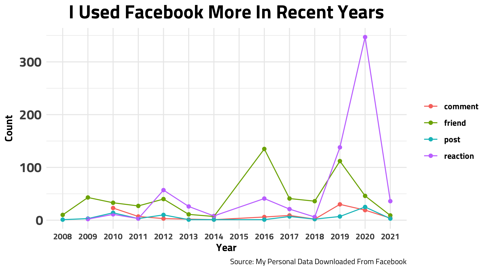
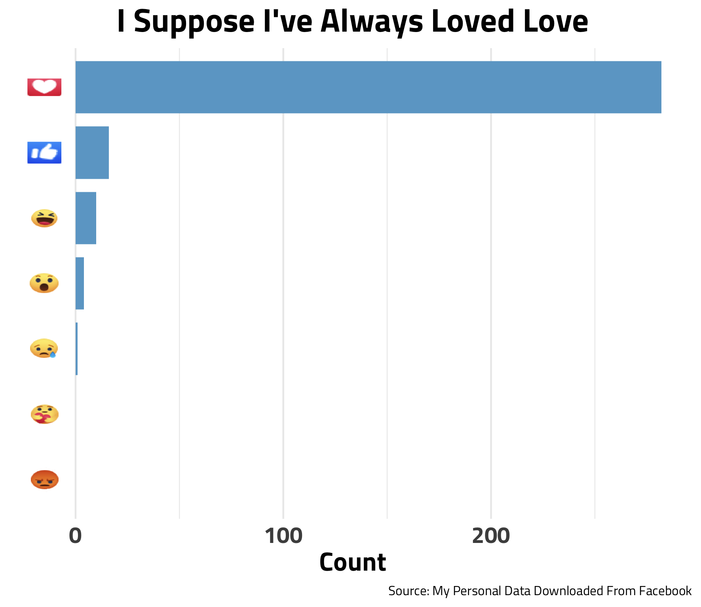
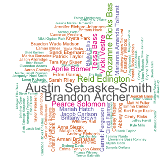
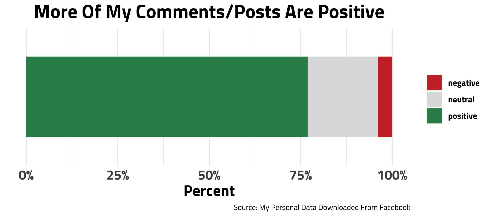

My Facebook Data… EXPOSED
Do you like the title? You can thank all of my click-bait ad consumption for that.

As some of you may know, my work is fairly political, so I have developed a habit of staying up to date on news and politics. Recently, social media has made some headlines including talks at congressional hearings, reporters expressing concern over its influence on elections, and some are worrying about censorship. So, amid all of this (and the rest of this post is a much lighter tone than this intro), I wanted to download my personal data from Facebook to show an overview of the role its played in my life since I got an account.
👇Read This👇
I made 4 figures from MY Facebook data. In my next project, I’m making a web app that lets YOU upload YOUR data and will generate these same figures for YOU. So, be thinking about what these figures would look like for YOUR data.
Figure 1

Whew Ok. Lets see what’s going on here. Most clearly, my reactions spiked in 2020. My posts also inched up during that time. Wow, I guess the pandemic has increased my social media usage😬, but starting this blog last year probably contributed to this. Another thing, if you look closer, notice that there are no data points for 2015. In 2015, I was on my church service mission for the entire year and didn’t use social media! But, my friends spiked in 2016 accounting for the friends I made during that time and college freshman friends. Also, I moved twice in my 2019 college year and met a lot of people which explains the second friend bump. Hmm I wonder what YOUR graph would look like?👀👀
Note: I aggregated the data by year. So, my 2021 data points are lower than the rest, but this may not be because I have used Facebook less during 2021, but rather there are many days left in this year that haven’t been accounted for.
Figure 2

Well the “Love” emoji is my most popular from the last year. When I made this graph originally using ALL of my data, I just got a bunch of “Like”s because that was the only reaction available for a long time; hence, I decided to filter the data to the last year only. Hmm perhaps I should try using the care/angry emojis.
Figure 3 - Best Facebook Friends Wordlcloud

Alright, this is what we’re really here for. The bigger the name, the better friends my method thinks I am to that person. So for me, Austin Sebaske-Smith and Brandon Archer are my best FB friends, and turns out they are both worthy of that title🥺. If your name isn’t big or on the chart don’t worry, I still care about you too.
How I did this: I gave a certain amount of “friendship points” for each time you reacted to a person, mentioned a person in a comment, posted about a person, etc. Afterwards, I totaled these points for each friend. I then weighted by interaction(if I mentioned you in a post or comment, It could mean more than a simple reaction to a post) and recency.
Figure 4

This last chart was a fun add-on for me. Using a simple model, I processed all of my comments and posts and tried to determine which were positive and negative. Thankfully, a lot of my interactions were coded as positive😁. Though I think this is largely due to commenting for friend’s birthdays.
How I did this: there is a whole subsection of data science that is particularly focused on a computer understanding different sentiments in written text. It is called Natural Language Processing. This is fairly new field that has A LOT of room to grow. So there can be low accuracy and many errors. I used a dictionary that has words coded as positive and negative and I matched it my comments and posts for these scores.
Closing Thoughts
Now my secrets are exposed - Oh well. Thanks for reading:) Shoot me a message or something if you would be interested in the app that generates these graphs for YOU. It might help me have more motivation to finish it.
My code for this post is here.